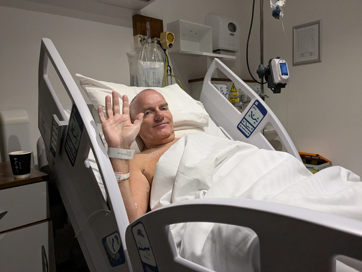
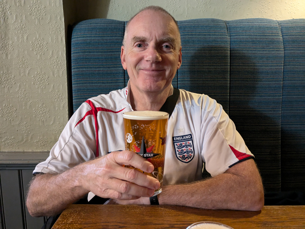

Monday 17th June While in Bacharach, I received a text message inviting my to book an appointment to have a PSA test carried out to check for possible prostate cancer.
Friday 19th July On our way home from Berlin, I phoned up and got an appointment for the test for next week.
Thursday 25th July Had the blood test with the nurse in Kingsclere.
Monday 5th August I had a phone call from Dr Robinson telling me that my PSA levels were raised. I was already booked in for a second blood test which I had this morning.
PSA Levels were 8.66 and 9.49.
Thursday 8th August I had a phone appointment with a urology nurse (Precious) who asked me a lot of questions and booked me in for an MRI scan for Sunday.
Sunday 11th August Had my MRI scan at Basingstoke hospital. A relatively painless if not very pleasant experience.
Tuesday 20th August I had been told that I would have to have a biopsy to determine whether or not I had cancer. I had a few questions and sent Precious an e-mail. She called me back and told me that the MRI scan had come back with a Likert score of 5 meaning that it was "very likely" that I had cancer that would require treatment. This was probably the first time that I considered the possibility that I really did have cancer.
Sunday 25th August We went to Basingstoke for the biopsy. This was a particularly unpleasant experience. I had been reading up on it for a few days and had been getting quite stressed about it all. Although it was a slightly painful and very un-dignified hour or so, I felt very relieved afterwards that it was over. The doctor had confirmed that it was very likely to be cancer.
Tuesday 3rd September We were heading over to Ireland for six nights due to England playing in Dublin on Saturday. I had arranged a telephone consultation with a doctor regarding the biopsy. He phoned me while we were sat in departures and confirmed that I did have prostate cancer. We had been fairly aware that this was likely since the biopsy but the diagnosis was worse than expected (Gleason 4+5) and will require more tests to see if it has spread outside the prostrate.
Friday 6th September Tuesday's news had started to have a bit more of an impact on us both in the last 24 hours. I was starting to get quite worried about it all, neither of us are sleeping well and Roz in particular is getting quite stressed about the lack of updates or news about what is happening next. I had been given a number to call if I had any questions and tried ringing at 9. I had to leave a message to get them to call me back but eventually did get to speak to one of the cancer nurses (Precious, again).
She was quite reassuring and explained that there was no urgency to get anything done and I should hear something within the next two or three weeks. She also told me that the chances of the cancer having spread outside the prostate is very low and this is unlikely to change while I wait for further tests (the next step is a PET scan). Three days of worrying about the diagnosis had probably made things seem a lot worse than they really are and we were both feeling a lot happier about things as a result of this phone call.
Monday 9th September After getting beck from Ireland, I had a phone call telling me that I had a PET scan booked for Guildford on Thursday. This causes a few problems for our trip to Greece but we were relieved to get the appointment so quickly.
Wednesday 11th September I spoke to Elfan this afternoon. He had a prostatectomy 13 years ago and it was quite a reassuring conversation. The way he talked about it all made it seem a lot less stressful and traumatic than I was expecting. Some sort of good news!
Thursday 12th September The PET scan all went fine. They saw me about 90 minutes earlier than the appointment was booked for. I was injected with some sort of radio-active liquid and made to wait in a room on my own for about an hour. The scan was not as bad as the MRI scan and only took about 20 minutes. By 10:45, I was on my way to Gatwick.
Tuesday 17th September While at the beach, I had a phone call from a cancer nurse in Basingstoke to tell me that my cancer has not spread to other parts of my body and that I will now be referred to Southampton for surgery. It has spread to one of my lymph nodes which will have to be removed as well but overall, this was very good news.
Thursday 19th September I phoned the prostate cancer people in Basingstoke again today. We had both been struggling with everything since Tuesday and were considering options for flying straight home. However, I managed to get through to Precious and once again, she was very reassuring and answered all our questions. She seemed to think we should hear from Southampton in the next week and so we decided to carry on with the holiday as planned.
Tuesday 24th September I had a phone call from the hospital in Southampton offering me an appointment tomorrow as they had a cancellation. It was not possible for us to get home in time for this so I had to turn it down. This was a shame as there was nothing we could do about it but I was told that I would get my appointment date later today.
I received an e-mail offering me an appointment on 23rd of October. This was not good as we were hoping to see someone sooner than that. When Roz got back from the beach, we booked a consultation privately on October 1st.
Tuesday 1st October Roz and I drove down to Spire hospital in Southampton for a 7pm consultation with Mr Chedgy. He was very good at explaining what was going on and the severity of my cancer. He confirmed that surgery was my best option. After discussing everything with him, given the severity of the cancer, we both agreed that spending £20,000 to have the operation done privately was a good move. He told us that he may be able to do the operation on 23rd Oct.
Wednesday 2nd October Had a phone call at 8:45 from Laura, Mr Chedgy's secretary. She confirmed that I can be booked in for the operation on the 23rd.
Wednesday 9th October I had my pre-assessment telephone call with Helen Spry. This was just a 20 minute conversation going through the form that I sent in last week and telling me what I need to do before the operation, etc.
Thursday 10th October I drove down to Southampton for an 8:00 appointment for my pre-operative assessment. This consisted of someone measuring my height, weight, blood pressure and taking a blood sample. All took about 10 minutes.
Monday 21st October We both spoke to Sarah, one of Spire's cancer nurses and had a lot of our questions re the operation answered.
Tuesday 22nd October I drove down to Southampton for an 9:15 appointment for a final blood test before the operation.
Wednesday 23rd October - Operation Day We left for Southampton just after 11 and returned to the Spire Hospital. We checked in at reception and at 12:30 were shown to my room. We had chats with the anaesthetist and Mr Chedgy and I then spent an hour having blood pressure test, ECG, blood test, etc. I got into my gown and was given an enema before being taken down to the theatre.
Things happened very quickly then for me. I was making small talk with one of the people in the theatre and the next thing I knew, I was waking up in recovery. The operation took longer than expected as apparently the prostate was difficult to get out but everything went very well. I did not really know what was going on at this point but I was wheeled back to the room just after 7pm.

Roz was there when I got back but I was still not really with it when she left after 9. I recovered sufficiently to watch some of the football about 20 minutes later. I was regularly tested through the first part of the night and did not get a lot of sleep.
Thursday 24th October I was awake very early and still without a totally clear head. Mr Cledgy visited at 8ish and again told me that all had gone very well and that I would be able to go home today if I wanted to. I did not really feel like going home when he said it as the safety of staying in the hospital appealed more. I was not in great pain but very uncomfortable.
By midday, I was feeling better and the idea of going home seemed a bit more appealing. I had had a few walks round the hospital. The catheter was sore but walking was not a problem. Roz turned up at 2ish and we decided that I may as well go back with her. I had my cannulas and drain removed and we were given a lot of drugs and other goodies for the next few weeks as well as a few demonstrations about how everything worked. Less than 24 hours after the operation had finished, we were back in Kingsclere.
I was nodding off by 8pm so went to bed and managed to get four hours of really good sleep. Roz slept on the settee. The rest of the night was not so good as I could not get comfortable and could not really get any more proper sleep. I kept waking up with a lot of trapped wind. Getting up to release it was quite painful. I had not taken as many painkillers as had been recommended as I had not really had that much pain. This may have been a mistake!
Friday 25th October I had been warned that I would "dip" today and I was in quite a bit of discomfort although still nothing bad enough to make me take the stronger pain killers that I had been given. I did feel better after getting up. Roz had to change the dressing on the wound where my drain had been removed - all a bit stressful for her but she managed it. I was able to keep getting up and walking short distances but the irritation from the catheter was limiting what I could do. In bed by 8ish again.
Saturday 26th October I felt much better when I woke up today (at about 4:30). I got up and swapped places with Roz again and felt pretty good most of the day. Roz had to change my dressing again but the wound is not leaking as much which is good news. I was flagging a bit by about 3pm but after an hours sleep was fine in the evening. I joined in the chat but started feeling rough again by 9ish so departed before the quiz started. I managed to get a very good night's sleep for the first time since the operation.
Sunday 27th October Managed to sleep until almost 6am. With the clocks going back, this was almost ten hours. Felt better for it. My stomach area is starting to feel a lot better but my balls are starting to swell and are quite uncomfortable. Catheter still annoying but only there for three more days. Roz had to replace the dressing again.
Wednesday 30th October Not much change in the last couple of days with the catheter still being the main problem. It was causing me pain when I walked which meant that I was not able to start exercising as much as I wanted to. However, today was the day it was removed.
We drove down to Southampton again for the 10:00 appointment and were shown to a room on the same ward I was in a week ago. We were told straight away that I would be there for 4 - 8 hours as I needed to pee three times before I would be allowed to leave. This came as a surprise as I had expected to be there about half an hour.
Things got better after that. The nurse who was looking after me removed the catheter. I did not even need to sit down for this. She knelt in front of me and pulled it out while I was stood up. Another unpleasant, undignified but not particularly painful experience. I also had all my dressings removed. The six wounds across my stomach all seem to be healing without any issues.
Walking became instantly easier and we went for a couple of laps of the hospital before returning to the room. The next four hours were spent mainly drinking tea and water while waiting to pee. I had to prove that I was capable of emptying the bladder so each time I peed, my bladder was scanned to see how much was left in it. The first pee left 100ml in the bladder and the second 39ml. By the third, the scanner could not even find the bladder implying that it was completely empty. All good news and we were on our way home again by 2:30.
For the rest of the day, my bladder control was not great. Some level of incontinence was to be expected but the reality of it was quite depressing. It was fine when sat still but any sort of movement caused me to leak, I have a supply of incontinence pads and pants but after the relief of having the catheter out, it was a reminder that I still have a long way to go.
Friday 8th November Steady progress since the catheter was removed. All the wounds have healed nicely and although there has been a lot of itchiness, that seems to have stopped now. I have been able to walk more and am generally feeling a lot better. I had also been able to cut down on the paracetamol.
However, I have still been having a lot of discomfort in my balls and since Tuesday, I have had some difficulty peeing. This only seems to occur in the middle of the day but by today it had got more serious. By about midday, not only was it more painful but I was unable to pee at all despite needing to go. I had phoned Southampton on Wednesday and they did not seem too concerned but when I phoned again today, they told me to come in. Roz drove me down there and they saw me straight away. As soon as I got onto a bed, I started leaking and was able to go immediately!
They took a urine sample and confirmed that I did have an urinary tract infection which I was very relieved about. If there had not been an infection, having the catheter replaced may have been the only option. Instead, I was given antibiotics and ibuprofen which should sort everything out in a few days. Although this was not ideal, I was just relieved that they had found the problem and it was relatively simple to resolve.
Sunday 10th November The antibiotics seemed to resolve the issue fairly quickly. Although still slightly uncomfortable peeing, at least I was able to pee. Today was the first day with no leaking or dribbling at all.
Wednesday 13th November The dryness of Sunday did not last and I was back to leaking again on Monday particularly when walking. Today was the worst day for leakage since the catheter came out. It was also the day where I had done the most walking as well (11,500 steps). I am not sure if these two things are linked but we decided that it may be a good idea to visit a physiotherapist who specialises in bladder issues to try and get things under control as quickly as possible.
Thursday 14th November We were back in Southampton tonight for an appointment with Mr Chedgy to discuss the pathology report following the operation. He seemed happy with my progress with regards to recovering from the operation and did not think there was any need for me to see a physio. He seemed to think that my level of incontinence was not too bad and that it should get better on its own.
However, the pathology results were not great. We were both hoping for reports of a "negative margin" although neither of us were really expecting it. The report showed there was a positive margin meaning that the cancer had spread outside the prostate. The report also revealed that 9 of the 22 lymph nodes that had been removed were cancerous. This was worse than he had expected.
There is still nothing conclusive about how much the cancer has spread or even if there is any remaining at all. There is nothing that we can do now apart from wait for the results of my next psa test. The test will be in another three weeks (5/12) and we will find out the results a week later (12/12).
Saturday 16th November We went out for a meal at The Star. I had planned to abstain from alcohol for another week but felt like a drink and had a couple of glasses of wine with the meal.... followed by a couple more when we got home. I had no adverse reaction to this which was good news. My first alcohol for four weeks.
Sunday 17th November We were up in London today for the England game at Wembley. Again I had not planned to have any alcohol but weakened when we stopped at The Shakespeare's Head and tried a half. Again this did not seem to cause too many problems so I had another couple of pints in The Doric Arch. This caused a bit of leakage on the way to the football but nothing too bad. I had a supply of pads with me so it was all just about manageable without too many problems.

I was very tired by the end of the football so it seemed quite a long journey home. As well as the beer, today was the most walking I have done since the operation. All in all, it seemed like a big step in the right direction and a return to some sort of normality. It was good to realise that already, I am able to spend some time in pubs and have a few pints without any issues.
Tuesday 19th November The last day of having to give myself blood thinning injections and the last day of having to wear compression stockings.
Wednesday 20th November After listening to a podcast that Mr Chedgy had sent me, I bought a book - "Life after Prostatectomy and Other Urological Surgeries: 10 Weeks from Incontinence to Continence" by Vanita Gaglani. I started following her 10 week plan instead of just doing the pelvic floor exercises as suggested by the squeezy app. There were a few things she suggested that seemed to make sense so thought it was worth a go. Managed to do 10,000 steps today which is more than I have been doing.
Saturday 23rd November One month after the operation and I was up to going to London again for the Millwall v Sunderland game. I got through a few pads but no major disasters and was reasonably comfortable walking around. I had a couple of pints before the game and three afterward before the train home.
Sunday 24th November Moved on to Week 2 of the exercises in the book.
Thursday 28th November Had a couple of nights in London without too many problems. We had to be a bit more careful with choice of pubs making sure we were not travelling too far after starting drinking and finished up the evenings with pubs near the hotel. I also had a few halves in some of the pubs but apart from that it was almost back to normal sessions for the first time.
Sunday 1st December Moved on to Week 3 of the exercises in the book.
Wednesday 4th December Two weeks after starting on the exercises in the book and there is definitely signs of improvement. We went to the cinema in Newbury and had a few drinks without much leaking.
Thursday 5th December I returned to Southampton for another blood test. This is another psa test and will reveal whether or not more treatment is required. Results in a weeks time.
Thursday 12th December It was back to Southampton this evening for another meeting with Mr Chedgy to discuss the results of my psa test. The psa levels were quite low - 0.244 - but need to be lower than 0.2. I will have to have another blood test in three weeks. If the level is still over 0.2, I will have to have another PET scan to determine where the remaining cancer is. If it has dropped below 0.2, it will be another psa test 6 weeks later.
I don't know if this will be the end of my private health treatment and the last time I see Mr Chedgy. There is no need to have the blood test done privately as I can get it done free in Kingsclere on the NHS. After that, it may be that there is no urgency to get any treatment and if I do need radio therapy, it will probably be done in Basingstoke.
Friday 6th December Booked the blood test in Kingsclere for Jan 2nd.
Thursday 2nd January 2025 Had my blood test with the nurse in the health centre.
The last few weeks have seen a steady improvement in my incontinence. I am up to week seven of the exercises in my book and the leaking is now fairly minimal (except when drunk!) I have been able to have a fairly normal Christmas and on Sunday was back in the gym for the first time since the operation. I am not up to running at the speed I could in October but am able to jog for an hour which is a start.
Two days ago, I was given a prescription for a "SOMAerect Response II" as recommended by Mr Chedgy. I should be able to collect it from Boots next week.
Friday 3rd January Collected my penis pump from Boots.
Saturday 4th January While on the early bus into Newbury I checked the NHS app and found the result of my blood test. My PSA level had risen slightly to 0.285 meaning that further treatment will almost certainly be required. I sent an email to Mr Chedgy's secretary with the details.
Monday 6th January A frustrating day waiting to find out what is going to happen next. My GP can not really do anything until I have heard from Mr Chedgy. I will almost certainly need another PET scan but we are not sure how urgently this is required and whether or not we will have to pay to go privately again. We are planning on flying to Malaysia in eight days time so would like to get it done in the next week if possible.
Tuesday 7th January I had a phone call from Laura (Mr Chedgy's secretary) while at the gym saying that I should be able to get the scan done next Monday. However, this was not confirmed. I had to phone GenesisCare in Windsor (where the scan would take place) but they could not tell me anything until they had received the referral from Mr Chedgy. It should take about 24 hours to confirm. Still a bit frustrating but things do seem to be moving in the right direction. A scan on Monday would mean that we are OK to go on holiday.
Wednesday 8th January I was phoned by GenesisCare and told that they did have a space available for 2pm on Monday. They sent me an invoice for £2,500 which I paid straight away. Still waiting for the official confirmation of the appointment.
Thursday 9th January I phoned GenesisCare who confirmed that they have received payment and that I am booked in for a PET scan on Monday.
Friday 10th January Follow-up appointment booked with Mr Chedgy for Feb 27th to discuss results of the PET scan and further treatment options.
Tuesday 13th January Went for my PET scan at GenesisCare in Windsor.
Monday 27th January Woke up to find a message about the result of my PET scan. Apparently "there is no sign of overt deposits of cancer on the scan" and I can wait until we get home next month to discuss further treatment. Very good news!
Wednesday 12th February First proper erection!!
Wednesday 26th February While stationary on the M4 coming back from Wales, I had a phone call from Laura asking about my PSA Blood test. No-one had told me that I needed a further blood test but I needed to have it or I would have to postpone my consultation with Mr Chedgy tomorrow. We phoned Southampton and managed to get an appointment for this afternoon. As soon as we got home, I drove down and had the blood test. Panic over!
Thursday 27th February Back down to Southampton for my consultation with Mr Chedgy. It is looking as if I am going to have to undergo radio therapy to clear up the remaining cancer. I was hoping that this would not be necessary as nothing had showed up on the PET scan, but something is causing my PSA to continue to rise (now up to 0.392) and it is most likely to be something left in the prostate bed area.
I will almost certainly have to have "Salvage Prostate Bed Radiotherapy" which will apparently involve 35 sessions of radio therapy. Mr Chedgy had arranged for me to be contacted by an oncologist - Dr Adityanarayan Bhatnagar. He will contact me by phone tomorrow.
All in all the news was probably to be expected. However, in the last few weeks life had seemed to be getting back to normal. Having just about got over my incontinence, I will now have to put up with the side affects of the radio therapy, the thought of which is all a bit depressing again.
When we got home, the oncologist's secretary called me and confirmed that he would ring me at midday tomorrow.
Friday 28th February We had a 30 minute conversation with Dr Bhatnagar this morning. He confirmed that radiotherapy was the best option. He told us that it would be about a six week wait before anything would start happening if we went with the NHS but only about 10 days if we went private again. He did not know the cost of going private but said he would get back to us. He answered all our questions and explained more about the procedure and possible side affects.
I had a phone call from someone in the admin team telling me that the cost of going private would be £22,500. By this time I had already just about decided that I would have the treatment on the NHS. Going private would mean 35 trips to Southampton whereas the NHS treatment would be in Basingstoke. We both agreed that this was the best option despite the extra wait. I e-mailed Dr Bhatnagar with our decision and he told me he would "complete the radiotherapy booking request". We now wait to get the date for the Planning CT scan before the treatment can commence.
Thursday 6th March I got an email today telling me that I have an appointment for my CT Planning Scan next Wednesday. This scan is to determine the dose of radiotherapy I will need and exactly where I need it. I have to go to Southampton again for the scan but the treatment will be in Basingstoke after that. In theory the treatment could start about 10 days after the scan although we have seen 2 - 4 weeks mentioned in some places.
As this is only going to be 12 days after the consultation with Dr Bhatnagar this was very good news. We had expected a longer wait but this is only a couple of days after we would have expected me to have the scan if I had gone private again.
Wednesday 12th March Another trip down to Southampton, this time to the radiotherapy department in the General Hospital. My appointment was at 2pm.I had a half hour talk with Nick who told me a bit about the process and the side affects. I was told that my treatment would consist of 33 sessions of radiotherapy (not 35) and the first treatment would start on 1st April.
After I had signed the consent forms, I had to be canulated for the CT Scan and then had to drink 500ml of water half an hour before the scan. All quite boring as usual but I was out by 4pm.
Tuesday 1st April Radiotherapy Day 1: I was at the Radiotherapy centre, just behind